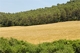
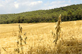
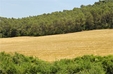
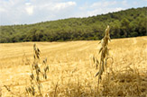

|
La pagesia catalana:
los Mansus como Can Borrell
Can Borrell es una de las masías que ha tenido una larga tradición agrícola y rural a lo largo de los siglos. Son una buena muestra los campos de cultivo que rodean la finca. Uno de ellos, considerado de los mayores en el conjunto agrícola situado dentro del ámbito del Parc de Collserola.
La pagesia (el campesinado) ata estrechamente prados de pasto con campos de cultivo, ganadería con agricultura. La proximidad del bosque también facilita madera para obrar los envigados, balconadas, y recursos energéticos como leña y carbón vegetal, así como alimentos como las setas, espárragos, piñones, castañas y piezas de caza.
  
En el afán del campesino para ganar tierras de labranza en el bosque, los claros cultivables tendieron a unirse formando grandes campos como los que tenemos en Can Borrell. Las casas de campo se adaptaron a las necesidades de la producción agraria. Se añadieron elementos que se hicieron imprescindibles como las balsas, graneros, corrales y otras construcciones que facilitaban las duras tareas del campo.
La situación relativamente benévola que durante un tiempo vivieron las masías, cambió a la primera mitad del siglo XI. Los campesinos se veían sometidos a la presión de nobles y a la atracción de los grandes monasterios como el de Sant Cugat. Tenían que escoger protectores que les parecieran menos amenazadores.
La masía de Can Borrell sin embargo, es de las pocas con las cuales no se puede relacionar una sumisión directa a la hegemonía del condado barcelonés que en aquellos momentos, se expandía por todas partes. Al Conde de Barcelona, Ramon Borrell II y su esposa Ermesenda de Carcasona, les vendieron incluso algunos bienes del propio Monasterio, según consta en el Cartulario del año 1013. Este hecho sin embargo, nos permite saber de la existencia del Mas Borrell en el valle de Gausac, ya en el siglo XI.
|
|